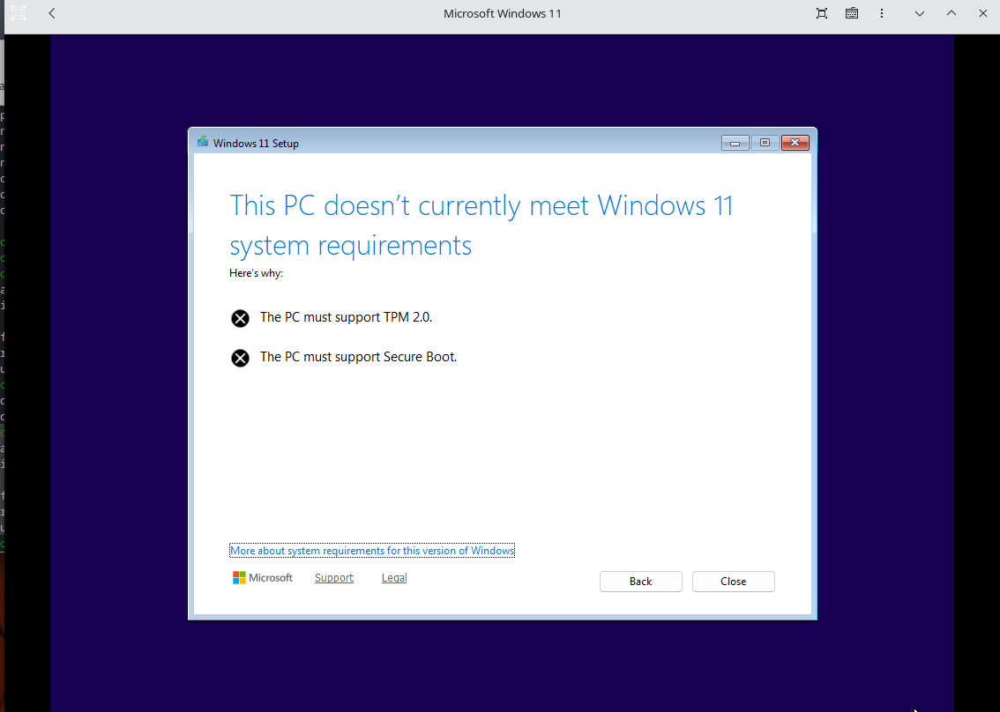
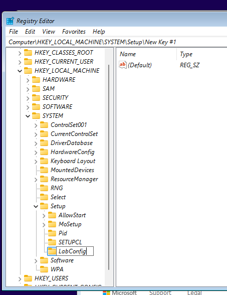
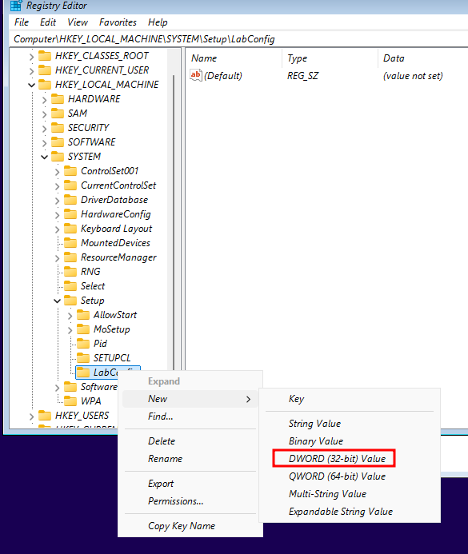
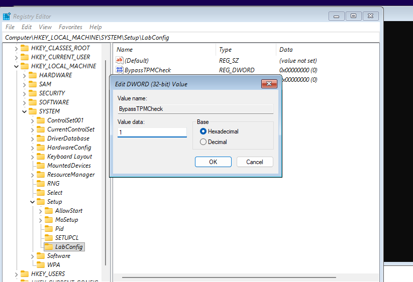
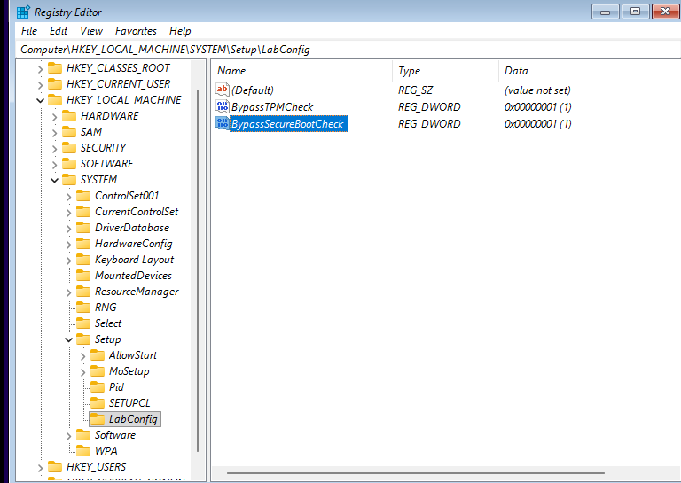
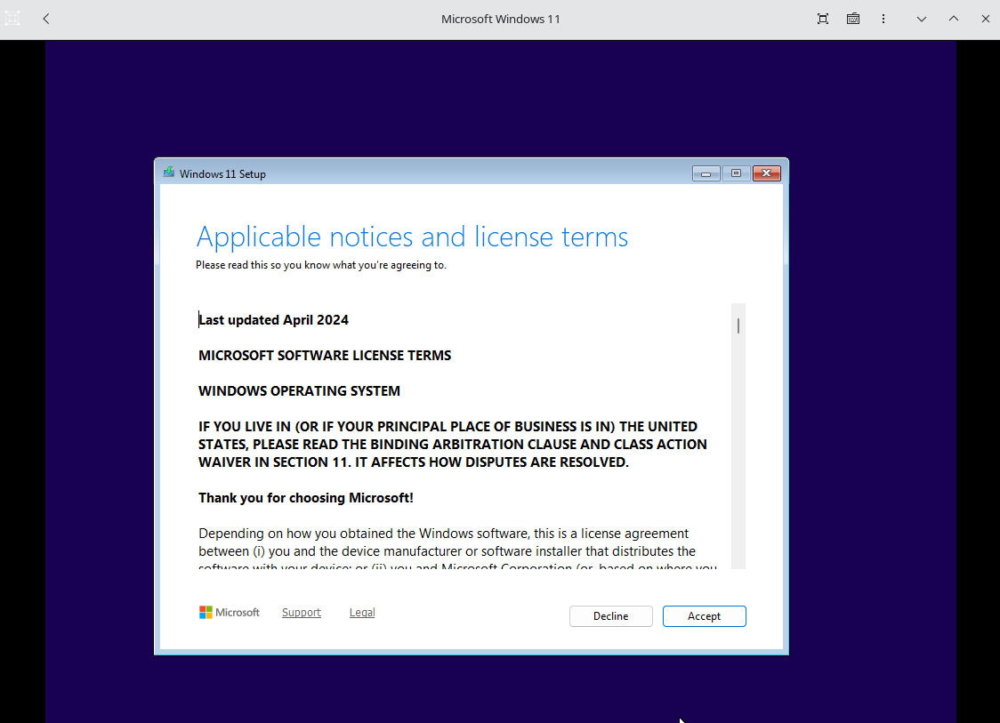

fui instalar o Windows 11 no GNOME Boxes pra ter um ambiente de testes Windows no Linux. recebi aquele erro: "This PC doesn't currently meet Windows 11 system requirements".
o instalador reclama de falta de TPM 2.0 e Secure Boot. esses requisitos fazem sentido em máquinas físicas, mas uma VM simplesmente não tem. a Microsoft disponibiliza chaves de registro específicas pro cenário de instalação em ambiente virtualizado, que é exatamente o que vamos usar.

Configurando o Regedit para ambiente virtualizado
quando chegar nessa tela de erro (ou logo no começo da instalação):
Abrindo o Regedit
- aperta Shift + F10 pra abrir o terminal (cmd).
- digita
regedite da enter.

Adicionando as chaves de bypass
- navega até:
HKEY_LOCAL_MACHINE>SYSTEM>Setup. - clica com botão direito na pasta Setup > New > Key e nomeia como
LabConfig. - dentro da
LabConfig, clica com botão direito > New > DWORD (32-bit) Value.

- cria esses dois valores:
BypassTPMCheckBypassSecureBootCheck
- clica duas vezes neles e muda o valor de 0 para 1.


depois é só fechar o regedit e o cmd, voltar uma tela na instalação e avançar de novo. o instalador reconhece as chaves e libera a instalação no ambiente virtualizado.
essas chaves (LabConfig, BypassTPMCheck, BypassSecureBootCheck) são documentadas pela própria Microsoft pra uso em ambientes de lab e virtualização. nao é nada obscuro, é o caminho oficial pra quem precisa rodar Windows 11 em VM sem hardware compatível.
